Diagnosa percuma · Ada warranty · Semua jenama
iPhone & Android · U Mall Skudai
Pals Phone Repair ialah kedai pembaikan telefon pintar di Lot G98 U Mall, Taman Pulai Utama, 81300 Skudai, Johor Bahru. Servis tukar skrin, bateri, port cas, kerosakan air & perisian untuk semua jenama. Setiap repair disertakan warranty, siap 30 minit. Hubungi: 011-2668 7411.
Kedai & Hasil Kerja
Gambar sebenar dari kedai Pals Phone Repair — before & after repair.
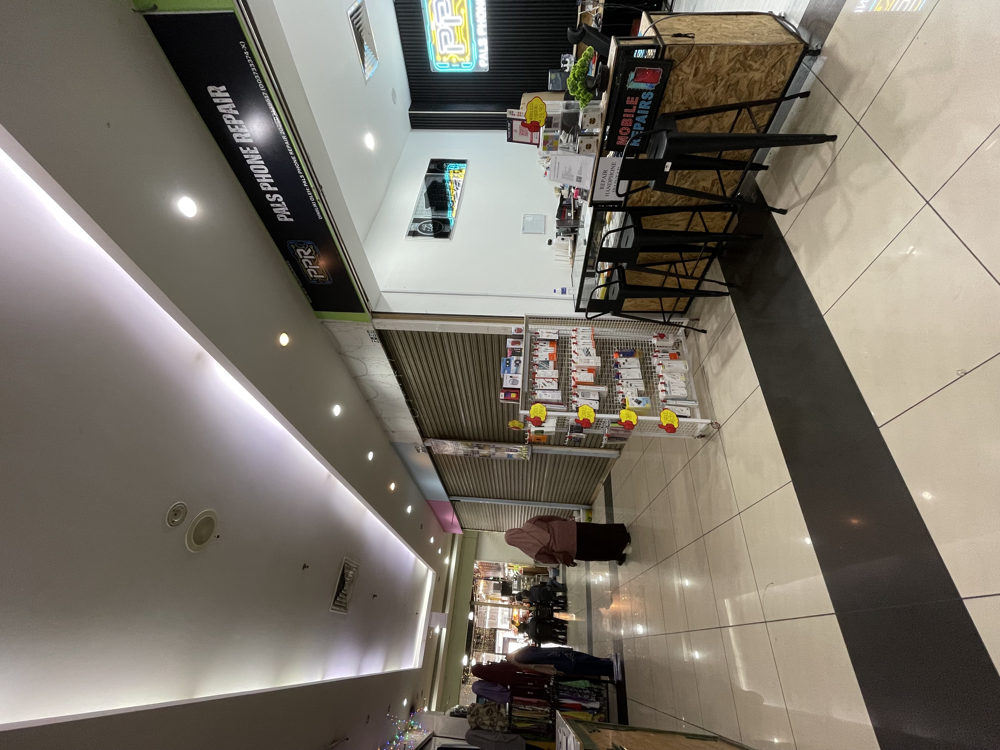
Kedai Kami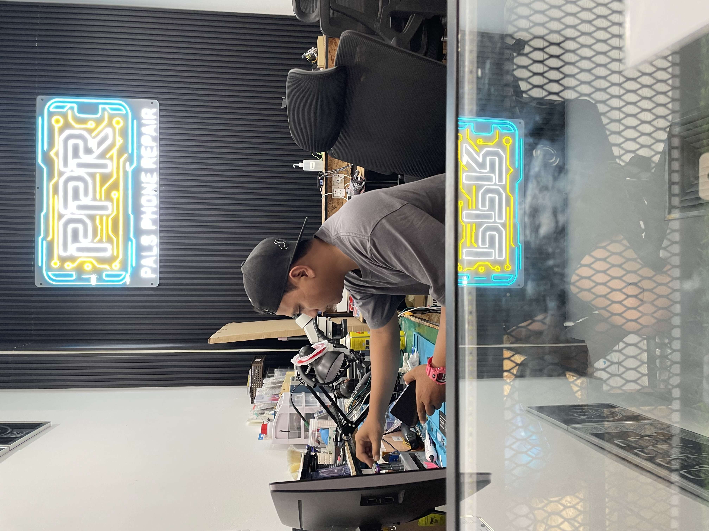
Teknisyen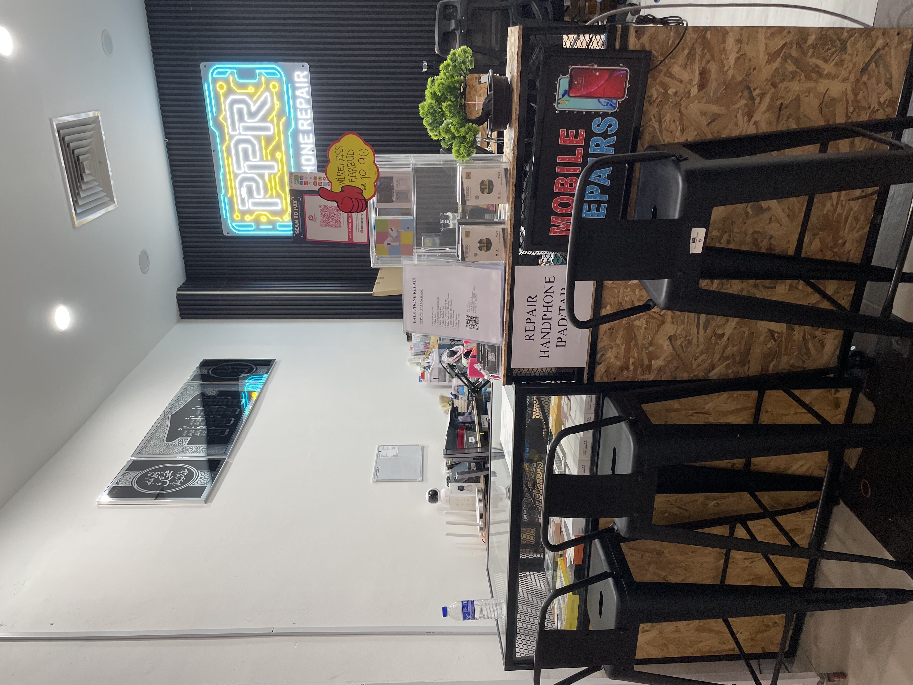
Interior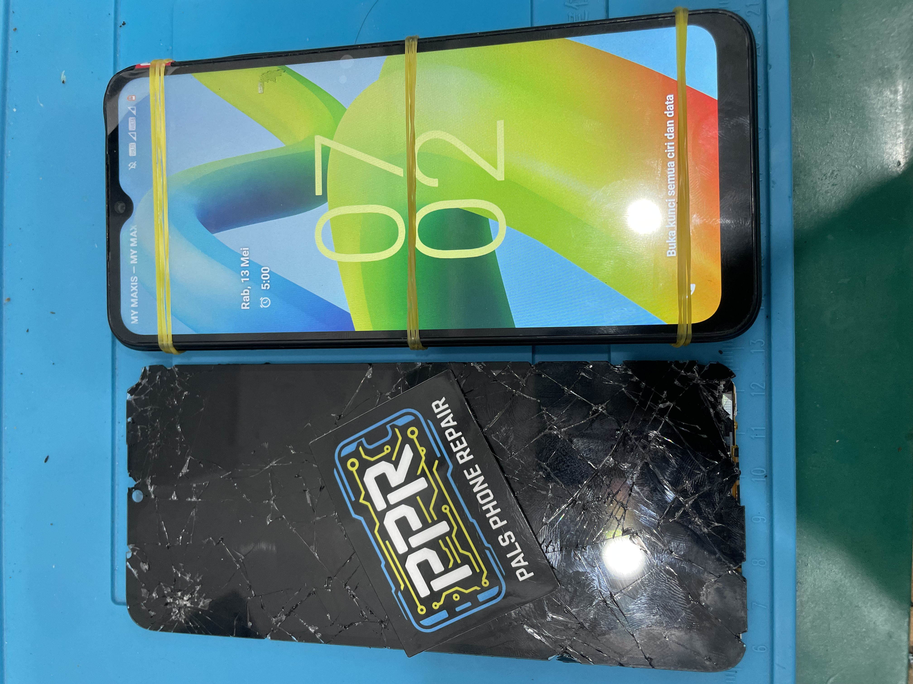
Sebelum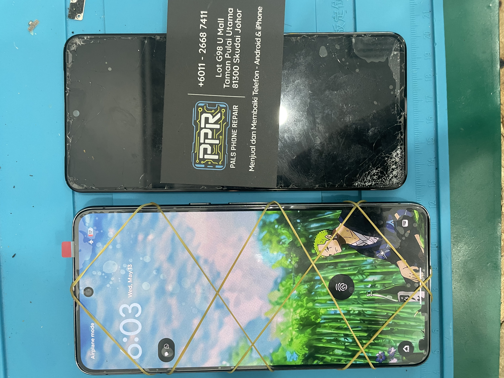
Selepas ✓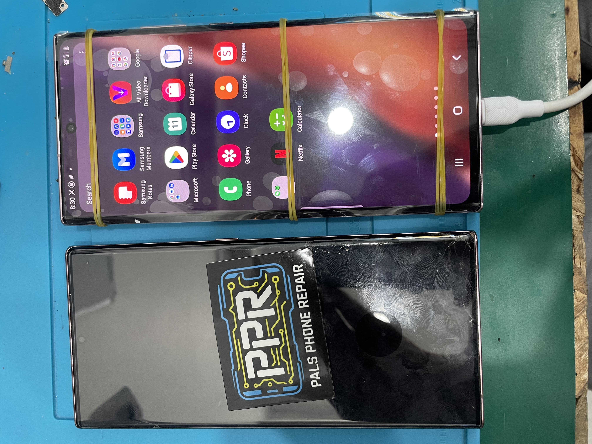
Sebelum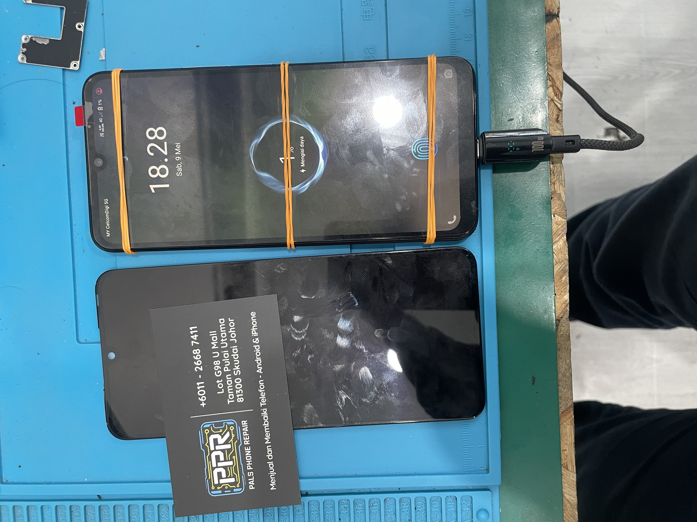
Selepas ✓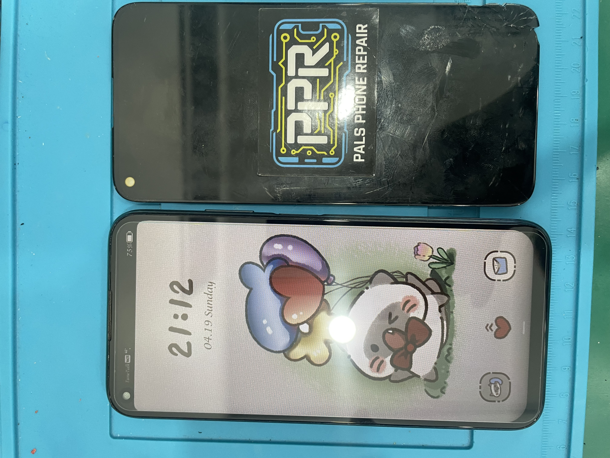
iPhone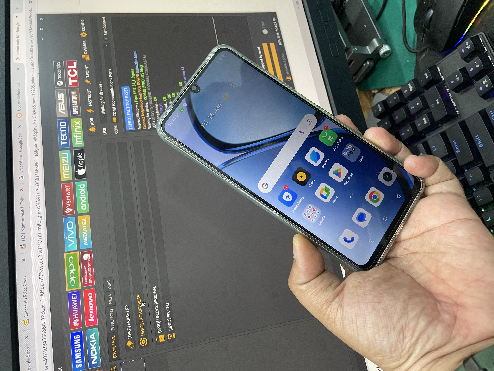
Perisian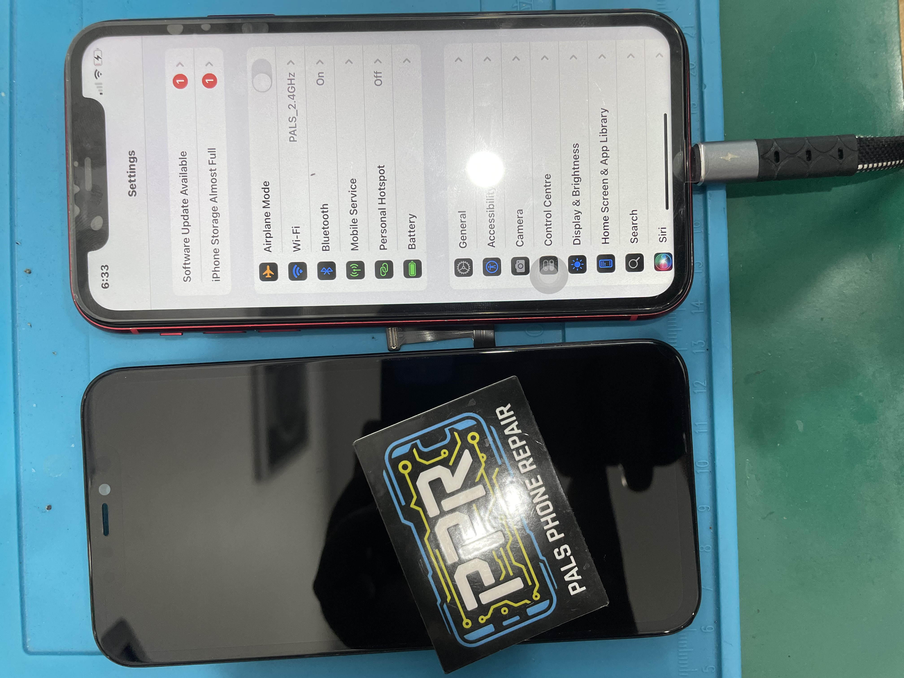
Selepas ✓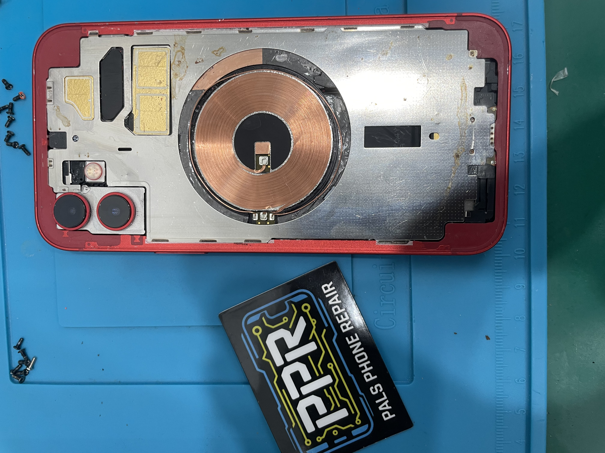
Sebelum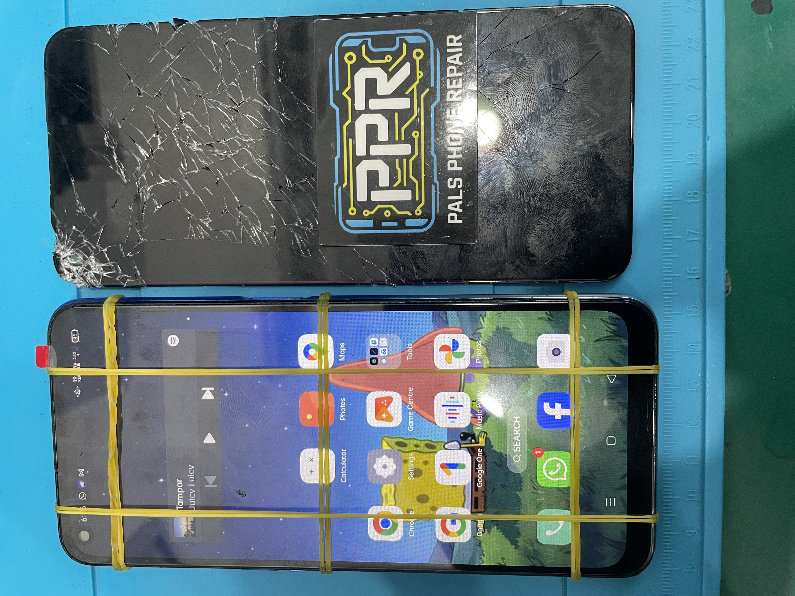
CasingServis & Harga
Harga telus, tiada caj tersembunyi. Anggaran diberikan sebelum kerja bermula.
Jenama yang kami servis
Kenapa Pals
Pantas, jujur, dan berwarranty — itulah janji Pals Phone Repair.
Soalan Lazim
Lokasi
Diagnosa percuma · Siap 30 minit · Ada warranty · U Mall Skudai
WhatsApp Pals Sekarang